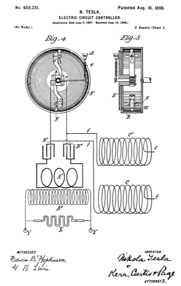

Descarga la patente original en esté enlace


Que se sepa que yo, NIKOLA TESLA , ciudadano de los Estados Unidos, que reside en Nueva York, en el condado y en el estado de Nueva York, he inventado ciertas mejoras nuevas y útiles en los controladores de circuitos eléctricos, de las cuales la siguiente es una especificación, teniendo como referencia los dibujos que la acompañan y que forman parte de la misma.
En patentes anteriores que me fueron otorgadas he mostrado y descrito métodos y aparatos para la conversión y utilización de corriente eléctrica de muy alta frecuencia basados en el principio de cargar un condensador o circuito que posea capacidad y descargar la misma generalmente a través del primario de un transformador. , el secundario de los cuales constituía la fuente de corriente de trabajo y en condiciones tales que produjeran una corriente vibrante o rápidamente intermitente.
En algunas de las formas de aparatos que he ideado hasta ahora para llevar a cabo esta invención, he empleado un mecanismo para hacer y romper un circuito eléctrico o una rama del mismo con el propósito de cargar y descargar el condensador, y mi presente solicitud se basa en un forma novedosa y mejorada de dispositivo para este propósito, que generalmente puede denominarse un "controlador de circuito".
Para que se puedan realizar todas las ventajas de mi sistema y asegurar los mejores resultados prácticos, dicho circuito-controlador debe ser capaz de cumplir con ciertos requisitos, el más importante entre los cuales es la capacidad de efectuar una interrupción y finalización extremadamente rápida de el circuito. También es de importancia que tales marcas y rupturas, y más especialmente las primeras, sean positivas y abruptas, y por consideraciones de economía y viabilidad es esencial que el aparato sea de construcción económica, no susceptible de desarreglo y capaz de prolongarse. utilizar sin atención o ajuste. Con el objeto de lograr estos resultados, que nunca hasta ahora se han logrado completamente en ninguna forma de circuito-controlador mecánico de la que yo tenga conocimiento.
El dispositivo en su realización típica comprende como elementos esenciales dos terminales, uno con contactos periféricos alternados con espacios aislantes, como se ejemplifica en un disco esteliforme y que es capaz de girar, y el otro un receptáculo giratorio que contiene un fluido en el que más o menos de la terminal nombrada en primer lugar está sumergida.
En la construcción preferida del aparato, el receptáculo contiene un fluido conductor y no conductor, siendo el primero el más pesado, y mantengo los terminales en tales relaciones que la conexión eléctrica entre ellos se hace y se rompe por la inmersión sucesiva del contacto. -puntos hacia adentro y su retirada de la conducción a través del fluido no conductor. Estas relaciones se mantienen mejor mediante la construcción del receptáculo de tal manera que la distribución de los dos fluidos necesarios para el funcionamiento correcto del dispositivo se puede preservar mediante la acción centrífuga y la rotación del otro terminal efectuada por el movimiento del fluido o fluidos con relación al mismo.
Para asegurar las condiciones necesarias para la realización de los objetos de la invención, se puede recurrir a varios expedientes mecánicos; pero el mejor y más práctico dispositivo para el que tengo conocimiento es una rueda hueca o un tambor montado de manera que gire a cualquier velocidad deseada y que contenga un fluido conductor, como mercurio o un electrolito, que mediante la rotación del El tambor se lanza por fuerza centrífuga hacia afuera hacia la periferia interior del mismo, y una cantidad suficiente de un fluido más ligero no conductor o pobremente conductor, como agua o aceite, que por la acción centrífuga se mantiene en la superficie del más pesado. fluido conductor y tiende a prevenir la aparición de arcos entre los puntos de contacto y el fluido conductor.
Se forma una abertura central en un lado del tambor, a través de la cual ingresa un brazo que lleva un disco con proyecciones o álabes periféricos que cuando se gira el tambor se proyectan en una extensión suficiente hacia el fluido conductor o dentro del mismo para efectuar las roturas y cierres circuito.
El movimiento del fluido dentro del tambor hace que el disco gire y sus proyecciones o álabes hagan y rompan el circuito con una rapidez que puede ser muy grande. De hecho, cuando el tambor gira a una alta velocidad, el conductor de fluido puede llegar a ser en su efecto similar a un cuerpo sólido, sobre el cual rueda el disco conductor, de modo que se puede prescindir del fluido conductor, aunque lo encuentro preferible usarlo.
Para asegurar la inmersión adecuada de las proyecciones en el fluido para compensar el desgaste y al mismo tiempo asegurar una presión de fluencia entre el fluido y el disco, es deseable emplear para el disco alguna forma de conexión o soporte de resorte que ejercerá una fuerza que tiende a forzarlo a entrar en contacto con el fluido.
También he ideado ciertos detalles de construcción que se suman a la eficiencia y practicidad del aparato que se describirá más convenientemente con referencia a los dibujos adjuntos.
La figura 1 es un alzado lateral de un aparato completo para producir corrientes de alta frecuencia y al que se aplica mi presente invención. La figura 2 es una sección vertical central del circuito-controlador mejorado de la figura 1; La figura 3, una vista desde un extremo del mismo; La figura 4, una forma modificada del circuito-controlador, que lo muestra en conexión con las partes restantes del aparato ilustrado esquemáticamente; y la figura 5, una vista lateral del mismo con el receptáculo en sección.
Como el aparato en su conjunto es ahora bien conocido, una breve descripción del mismo será suficiente para comprender su carácter.
Las diversas partes o dispositivos se montan preferiblemente en una base B, que contiene el condensador, y comprenden un transformador A con bobinas primarias y secundarias, una o más bobinas de autoinducción C, un pequeño motor electromagnético D, y el circuito-controlador, que es impulsado por el motor. Las conexiones del circuito se describirán en relación con la Fig.5.
En el plano general de construcción y disposición, el aparato es esencialmente el mismo que el descrito y mostrado en una patente concedida a mí el 22 de septiembre de 1896, número 568.176.
El eje del motor D se extiende a través de un disco estacionario E, y hasta su extremo está enchavetado una rueda hueca o tambor F, que gira con él. Dos estándares G están asegurados al disco E y conectados por una barra transversal H, desde la cual se extiende un brazo K hacia el interior del tambor F a través de una abertura central en su lado.
Al extremo del brazo K se fija un brazo L, que lleva en su extremo libre un disco M con dientes periféricos o proyecciones N, como se muestra en la Fig.3. El disco se monta sobre cualquier cojinete adecuado en el brazo L, de modo que para poder girar libremente.
Es deseable que el disco admita ajuste con respecto a la superficie periférica interior del tambor, y para ello aseguro el brazo K a una varilla O, que pasa por soportes en el travesaño H y es ajustable en el mismo mediante mediante tuercas roscadas P.
El interior del tambor F se forma de preferencia sustancialmente de la manera que se muestra en la figura 2, es decir, se estrecha o contrae hacia la periferia para formar un canal estrecho en el que se confina el fluido cuando el tambor se girado.
R designa el fluido conductor y S el fluido no conductor más ligero, que se utilizan en el tambor. Si se introducen las cantidades y proporciones adecuadas de estos fluidos en el tambor y este último se pone en rotación rápida, los dos fluidos se distribuirán bajo la acción de la fuerza centrífuga alrededor del tambor de la manera indicada en la Fig.2. El brazo K es ajustado de modo que los dientes o las proyecciones del disco M entren en el fluido conductor y, por la acción de uno o ambos, el disco gire rápidamente. Sus dientes están dispuestos de tal manera que no hay dos que estén simultáneamente en contacto con el fluido conductor, sino que entren en el mismo sucesivamente. Si, por lo tanto, una parte del circuito se conecta al tambor, como por una tira de contacto o cepillo T, y la otra parte al disco M, oa cualquier parte, como los estándares G, que están aislados del marco del aparato y en conexión metálica con el disco M, el circuito se hará y se romperá con una rapidez que evidentemente puede hacerse enormemente alta. La presencia del fluido no conductor en la superficie del otro opera para evitar la aparición de chispas cuando los dientes N salen de este último y también para evitar que la corriente salte a través del espacio entre los dientes y el conductor cuando los dos se acercan.
Para ilustrar las modificaciones cuya mejora es susceptible, me refiero ahora a las Figs. 4 y 5, en las que también se muestran ciertos detalles novedosos y útiles de construcción aplicables en general a la invención.
En la modificación mostrada en las Figs. 4 y 5 se muestran dos brazos rígidos L y L ' , cada uno con un disco M, y este número puede aumentarse, si se desea. Los discos rotativos en este caso están montados sobre husillos en ángulo recto con el eje de rotación del tambor F, y los puntos de contacto o proyecciones están formados como paletas, con caras inclinadas al plano de rotación, de manera que puedan ser rotados por el movimiento del fluido a modo de ruedas de turbina.
Con el fin de proporcionar un medio para ajustar automáticamente los discos para compensar cualquier desgaste y mantener los extremos de las paletas o puntos correctamente sumergidos en los fluidos, cada brazo portador de discos es impulsado por un resorte o peso en la dirección de la periferia de el tambor. Una forma conveniente de lograr esto es formar cremalleras en los brazos LL ' y proporcionar un piñón b en acoplamiento con ellos. Desde el eje del piñón se extiende un brazo c , cuyo extremo está conectado a un tope ajustable d por un resorte espiral e , cuya tendencia es hacer girar el piñón y forzar ambos brazos L y L ' hacia la periferia del tambor.
En algunas aplicaciones de la invención, es factible prevenir la aparición de arcos aún más eficazmente o incluso completamente utilizando además del fluido no conductor un fluido W algo más pesado, que es un conductor comparativamente pobre y que ocupa una posición entre los fluidos conductores y no conductores.
Cuando se utilizan dos o más discos o dispositivos equivalentes, pueden conectarse en serie o en varios. En la presente ilustración se muestran en serie, y como los brazos L y L ' están aislados entre sí y cada uno conectado con un terminal de la fuente de corriente, el circuito se completa solo cuando una paleta de cada disco se sumerge en el fluido conductor e interrumpido en todos los demás momentos.
El diagrama de conexiones del circuito servirá para ilustrar el propósito y el modo de funcionamiento del dispositivo. Sean ff los conductores de una fuente de corriente, cada uno de los cuales incluye una bobina de autoinducción CC ' y está conectado con los brazos L y L ' y con dos conductores B ' B ' ' , respectivamente. Luego, durante los períodos en que el circuito se completa entre los dos brazos LL ', las bobinas CC ' almacenan energía, que al interrumpirse dicho circuito se precipita y carga el condensador. Estos últimos durante los períodos en los que el circuito está cerrado entre los brazos L y L ' descargan a través del primario A 'e inducir mediante tales corrientes de descarga en el secundario A '' , que se utilizan para cualquier propósito para el que puedan ser adecuadas, como en el funcionamiento de los tubos de vacío X o las lámparas adecuadas Y.
Se entenderá que el tambor giratorio puede montarse en un plano horizontal o en otro plano y, a partir de la naturaleza y los objetos de los resultados obtenidos por el aparato particular descrito, la construcción de este aparato puede variar mucho sin apartarse de mi invención.
Por lo tanto, sin limitarme a los detalles de construcción y disposición que se muestran en este documento para ilustrar la manera en que mi invención se lleva a cabo o puede llevarse a cabo, lo que reclamo es:
Fechado el día 16 de Agosto de 1898.
Nikola Tesla.